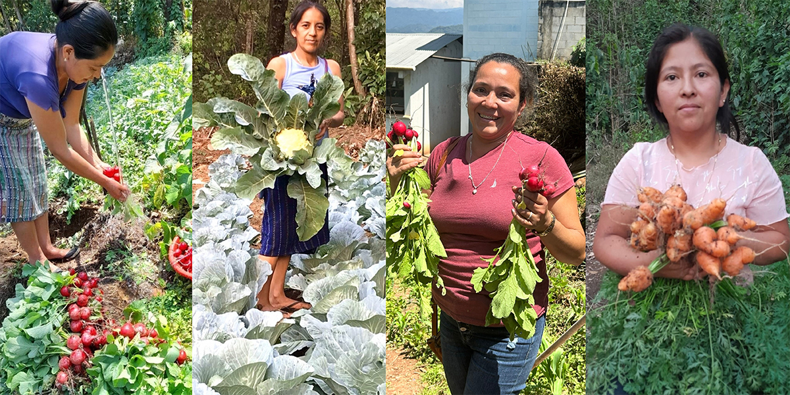

- Our Work
- THE CHALLENGES
- OUR IMPACT

Mission
We partner with coffee-farming communities in Latin America to cultivate a food
-secure future.
Our
co-op partners and the thousands of coffee-farming families
they represent are working to put
good,
healthy food on their tables every day.
Our Impact
We help coffee-growing communities strengthen local food systems, promote sustainable farming practices, diversify family livelihoods, and cultivate local leadership.
Help coffee-farming families and their communities access locally grown nutritious food, every day.
Blog

A Sweet Solution
for Economic
Empowerment in
Guatemala

Voices of Change:
Women’s Evolving
Roles in Coffee-
Farming
Communities
Groundbreakers:
Unveiling the
Historic Impact of
Women in Coffee
Farming

More Than Links in
More Than Links in
the Supply Chain:
Why Laura
Peterson Supports
Food 4 Farmers
“It’s a great advantage to grow vegetables
without pesticides so we don’t jeopardize the
health of our children.”
~ Rosibel Gonzalez, coffee farmer
Rosibel is a participant in our organic farmers market program with Nicaraguan coffee
cooperative SOPPEXCCA.
- 70 S Winooski Ave
- Ste 1W #312
- Burlington, VT 05401 USA
- Phone (802) 497-3304
- Tax ID: 27-2267267